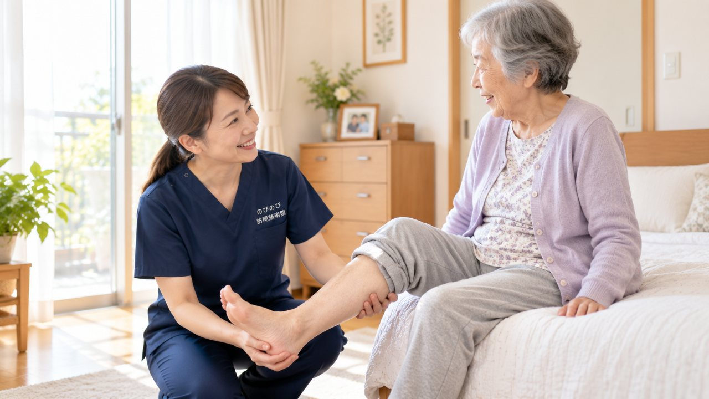

立ち上がるときにズキッとする、歩き始めの一歩がつらい、階段の下りがこわい。膝の痛みは、そのまま外出や通院の負担にもつながります。茨木市にお住まいで、加齢による変形性膝関節症などの膝の不調をかかえるご本人やご家族に向けて、訪問鍼灸マッサージに何ができて、何ができないのかを整理しました。原因の見きわめは整形外科の役割ですが、そこを土台にできる補助もあります。
はじめに要点だけ。膝の痛みの診断と治療は、まず整形外科などの医師が中心です。すり減った軟骨や進んだ変形は元には戻せず、効果には個人差もあります。訪問鍼灸マッサージの役割は、痛みをかばってこわばった膝や太もも、お尻をやわらげ、血のめぐりを助けることです。医師が鍼やお灸の必要を認め、通院が負担な状態であれば医療保険の対象です。1割負担の方は1回およそ395円（総額3,950円）が目安になります。
茨木市で膝の痛みに向き合う毎日を、少しでも軽くするために
JR茨木駅や阪急茨木市駅の周辺でも、駅までの道のりや商業施設の階段、自宅の上がりかまちなど、膝に負担がかかる場面は意外と多いものです。とりわけ総持寺や沢良宜、東奈良、西河原といった住宅街にお住まいで、立ち座りのたびに膝がきしむ、正座ができなくなった、階段は手すりが欠かせない、という方は少なくありません。下り坂では膝の前側が抜けるように感じて外出が億劫になった、という声をうかがうこともあります。
のびのび訪問施術院は、そうした膝の痛みで動くのがつらくなった方のご自宅へ伺い、お一人おひとりの状態に合わせた施術と機能訓練を行っています。まずはご自身の膝で何が起きているのかを知ることから、一緒に始めていきましょう。膝の痛みで立ち座りがつらいと感じる背景については、膝の痛みで立ち座りがつらい方へのページでも詳しくお伝えしています。
変形性膝関節症と、そこから始まる悪循環
中高年の膝の痛みで多いのが、変形性膝関節症にともなうものです。朝起きたときのこわばり、動き始めの痛み、膝まわりの腫れやむくみ、そして曲げ伸ばしがしにくくなる可動域の制限。これらは少しずつ進むため、「歳のせい」とやり過ごしているうちに、いつの間にか行動範囲が狭まっていることがあります。豊川や安威のあたりでも、以前は歩いて通えた場所へ足が向かなくなった、という方にお会いします。
痛いから動かさない、動かさないから太ももの筋力が落ちる、筋力が落ちるから膝を支えきれずさらに痛む。この廃用による悪循環こそが、膝の痛みを長引かせる大きな要因です。大切なのは、痛みと相談しながらも動きを保ち、太もも前面の筋肉をこれ以上落とさないこと。施術で膝まわりのこわばりをやわらげ、無理のない範囲で関節を動かしていくことが、その足がかりになります。
訪問だからできる、膝に合わせた施術と機能訓練
膝の痛みは、それにともなう腰や脚の痛みについて医師が施術を必要と認めた場合に、はり・きゅうの医療保険で受けていただけます。硬くなった膝まわりの組織にアプローチし、曲げ伸ばしの動きを少しずつ引き出しながら、太ももやふくらはぎの筋肉に働きかけていきます。これらはあくまで動きを保ち、日常の負担を軽くしていくための取り組みであり、病気そのものを治すものではないことは、あらかじめお伝えしておきたい点です。
施術には、立ち座りや歩行を想定した機能訓練も含みます。これらについて別途の料金はいただきません。ご自宅の椅子や布団、実際に使う段差を使いながら、「その方の生活の中で困っている動作」に沿って進められるのが訪問ならではの強みです。効き方には個人差があり、回数を重ねるなかで変化を一緒に確かめていきます。茨木市での訪問全般については、茨木市の訪問鍼灸マッサージもあわせてご覧ください。
料金と、利用に必要な手続き
費用は医療保険の療養費を使うため、1回の施術の総額3,950円に対し、自己負担は1割の方で約395円です。たとえば週2回のペースで受けられる場合、1割負担なら月あたりおよそ3,160円が目安になります。南茨木駅や総持寺駅の近隣も含め、対応エリア内であれば出張費はかからず料金は一律です。内訳の考え方は料金はいくら？医療保険の自己負担額と仕組みで詳しくご説明しています。
ご利用には医師の同意書が必要ですが、要介護認定は必要ありません。介護保険の限度額とは別枠のため、デイサービスなどをご利用中でも併用いただけます。なお、同一部位について医療保険のリハビリと鍼灸を同じ月に同時に算定することはできませんので、その点だけご留意ください。
まずはご相談から、動ける毎日を保つ一歩を
膝の痛みは、放っておくほど外出が減り、体全体の力が落ちていきやすいものです。そのため、痛みが強くなる前に、そして「もう遅い」と諦める前に、今の膝でできることを積み重ねていくことに意味があります。春日や西河原、山手台など、茨木市内のどの地域からのご相談も歓迎しています。
どこまで伺えるか気になる方は、対応エリアはどこまで来てもらえる？をご確認ください。ご本人だけでなく、離れて暮らすご家族からのお問い合わせも承っています。膝の状態やお困りごとを丁寧に伺ったうえで、無理のない進め方を一緒に考えていきますので、どうぞお気軽にお声がけください。
よくある質問
茨木市のどのあたりまで来てもらえますか？
JR茨木・阪急茨木市・南茨木・総持寺の周辺から、沢良宜、東奈良、西河原、春日、彩都、山手台など茨木市内を広くうかがっています。詳しい地域は、お問い合わせの際にご確認ください。エリア内であれば別途の出張費はかからず、どこでも同額です。
膝の変形と診断されていますが受けられますか？
慢性的な痛みに対して医師が必要と認め、通院が困難であれば保険で受けられます。すり減った軟骨や変形が元に戻るわけではありませんが、膝まわりのこわばりを和らげる補助はできます。感じ方には個人差があります。
膝に水がたまっているのですが、施術できますか？
水がたまっているときは、抜くかどうかも含めて医師の判断が土台になります。まず整形外科にご相談ください。そのうえで、施術では膝まわりや太もものこわばりを負担にならない範囲で和らげ、膝を支える力を保つお手伝いをします。
転んでから膝が痛いのですが大丈夫でしょうか？
痛みが強い、腫れや熱がある、体重を乗せられない場合は、まず整形外科で診てもらってください。骨や関節の中のトラブルが隠れていることがあるためです。医師の診断を受けたあとであれば、状態に合わせた補助を行えます。
1回いくらかかりますか？
自宅での1回の施術は総額3,950円で、1割負担の方はおよそ395円が目安です。1割の方が週1回受ける場合、ひと月の自己負担はおよそ1,580円ほど。公的な医療保険にもとづく正規の料金です。手技や身体を動かす運動は、鍼灸に加えるケアとして行います。これらについて別途の料金はいただきません。
要介護認定を受けていなくても利用できますか？
はい。はり・きゅうの医療保険は介護保険の認定とは別の制度です。認定がなくても、医師の同意があり通院がむずかしければ使えます。費用は介護保険の区分支給限度額とは別枠なので、ケアプランの上限には影響しません。
寝たきりや車いすでも受けられますか？
はい。ベッドや車いすの上など、その方の楽な姿勢に合わせて施術します。体勢や刺激の強さも体調に合わせて調整します。施設へうかがうこともできますので、ご担当者からのご相談も歓迎しています。
同意書などの手続きは自分で用意するのですか？
いいえ。保険を使うために必要な医師の同意書の段取りは、のびのび訪問施術院が手伝います。かかりつけの医療機関をお聞かせいただければ、こちらで調整を進めますので、ご負担は少なく始められます。